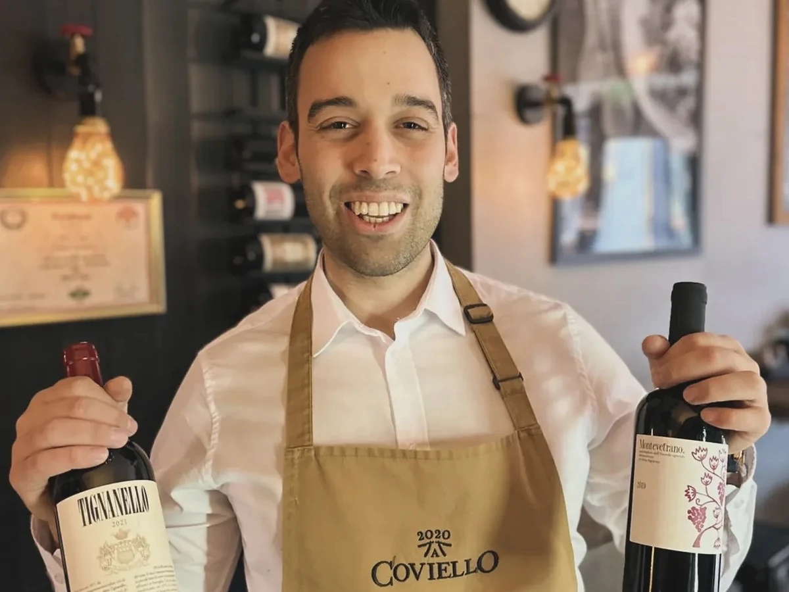
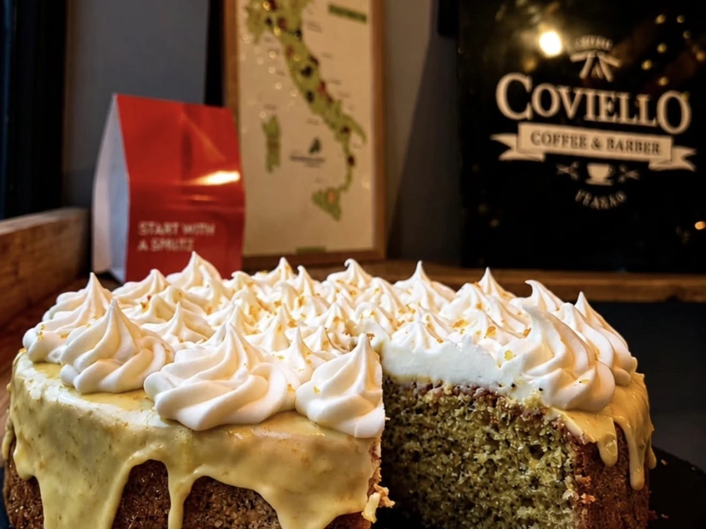

From the Italian hillsides of Castelforte — halfway between Rome and Naples — we bring you authentic Italian food, coffees and fine wines.
Daniel grew up in Castelforte, a village set back from a stretch of coastline most people never get round to visiting. He went into catering young, spent years managing the family business in Italy, and carried the whole of it with him when he moved to England.
He had always wanted a place of his own — a wine bar and restaurant where the cooking was the kind you'd get at home, and the wine list was chosen by someone who actually loved drinking it. Coviello is that place. Two things he knows well, put in one room on Silver Street.
Everything here follows from that. The tomato sauce is made in house. The ravioli are made in house. The meat for the taglieri is sliced fresh in front of you, never pre-cut, because it tastes different and anyone who's eaten it properly can tell. Once a month the room turns over to a tasting and the good bottles come out.
It's a small place, run by a family. That's rather the point.
Home cooked
Sauces, ravioli, gnocchi and parmigiana made on site, the way they're made at home rather than the way they're made at scale.
Sliced fresh
Every cured meat on the board is cut to order. No pre-cut, ever — it's the one rule nobody here will bend.
Chosen by hand
From Montepulciano to Pinot Nero, the list is short on purpose. Ask and we'll tell you exactly why each one is on it.

Coffee, wine, cocktails
Open from ten, all the way through
Coviello started as a coffee bar and never stopped being one. Espresso in the morning, lunch in the middle, and a spritz that turns into a bottle by the evening — the room changes character three times a day and you're welcome at any of them.
Come and see
24 Silver Street, Durham.
Tuesday to Saturday from 10:00, Sundays from 11:00.